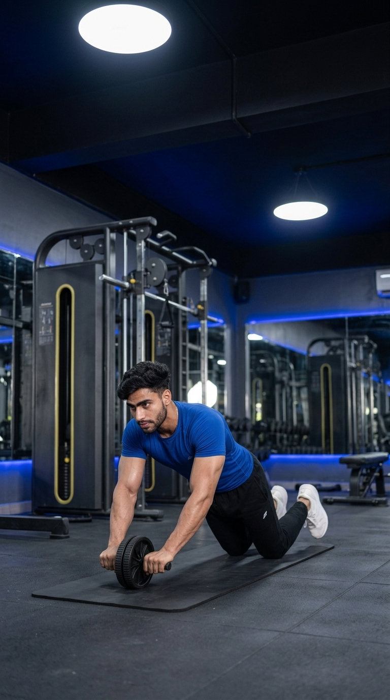

Primary Muscle
Rectus Abdominis
Build Exceptional Core Strength and Total-Body Stability
The Ab Wheel Rollout is one of the most effective advanced core exercises for developing abdominal strength, spinal stability, and anti-extension control. By rolling the wheel away from your body while maintaining a rigid torso, the exercise challenges the rectus abdominis, obliques, transverse abdominis, shoulders, lats, and hip flexors simultaneously. Whether your goal is building a stronger core, improving athletic performance, or enhancing lifting stability, the Ab Wheel Rollout delivers exceptional full-core activation.

Rectus Abdominis
Ab Wheel
Advanced
Strength
Discover which muscles power the Ab Wheel Rollout and how the supporting muscles work together to stabilize the spine, resist lower-back extension, and build exceptional core strength, balance, and total-body control.
Resists Spinal Extension and Maintains a Strong, Neutral Torso Throughout the Entire Rollout
Stabilize the Torso, Resist Rotation, and Assist in Maintaining Proper Core Alignment
Braces the Core and Increases Intra-Abdominal Pressure to Protect the Spine
Control the Rollout While Stabilizing the Shoulder Joint and Guiding the Movement
Discover how the Ab Wheel Rollout develops exceptional core strength, improves spinal stability, enhances athletic performance, increases total-body control, and builds a stronger, more resilient midsection.
The Ab Wheel Rollout intensely challenges the entire core, helping develop stronger abdominal muscles and improving overall trunk strength.
The exercise trains your core to resist excessive lower-back extension, promoting better spinal alignment and postural control.
A stronger and more stable core improves force transfer during squats, deadlifts, sprinting, jumping, throwing, and other athletic movements.
In addition to the abdominal muscles, the shoulders, lats, hip flexors, and spinal stabilizers work together to control every rollout.
Maintaining a rigid torso throughout the movement enhances balance, coordination, and total-body control during sports and resistance training.
When combined with progressive training, proper nutrition, and a healthy body fat percentage, the Ab Wheel Rollout helps develop stronger, thicker, and more visible abdominal muscles.
Follow these step-by-step instructions to perform the Ab Wheel Rollout with proper body alignment, controlled movement, and a braced core to maximize abdominal activation while protecting your lower back.
Kneel on the floor with the ab wheel directly beneath your shoulders. Grip both handles firmly with straight arms and keep your knees hip-width apart.
Place a soft exercise mat beneath your knees for comfort and stability.
Tighten your abdominal muscles, squeeze your glutes, and maintain a neutral spine before beginning the rollout.
Imagine pulling your ribs toward your pelvis to keep your core engaged.
Slowly roll the wheel forward while extending your arms. Keep your hips, shoulders, and torso aligned without allowing your lower back to sag.
Only roll as far as you can while maintaining perfect spinal alignment.
Briefly pause at your maximum controlled range while keeping your core fully braced and your spine neutral.
Stop immediately if you feel your hips drop or your lower back arch.
Exhale as you contract your abdominal muscles and pull the wheel back beneath your shoulders, returning to the starting position with complete control.
Pull yourself back using your core rather than relying on momentum or your arms.
Avoid these common technique mistakes to maximize core activation, protect your lower back, and perform the Ab Wheel Rollout safely and effectively.
Allowing your hips to drop places excessive stress on the lumbar spine and reduces the effectiveness of the exercise.
Brace your core, squeeze your glutes, and keep your spine neutral throughout every repetition.
Extending beyond your current strength causes you to lose core tension and often leads to poor spinal alignment.
Roll forward only as far as you can while maintaining complete control and a neutral spine.
Rolling too quickly reduces time under tension and shifts the work away from the abdominal muscles.
Perform every repetition slowly and under control, emphasizing smooth movement in both directions.
Relying on your shoulders and arms to return to the starting position reduces abdominal engagement and limits core development.
Initiate the return by contracting your abdominal muscles and pulling the wheel back using your core.
Apply these expert coaching cues to improve your Ab Wheel Rollout technique, maximize core activation, maintain proper spinal alignment, and build exceptional core strength with every repetition.
Tighten your abdominal muscles before every repetition and maintain full-body tension throughout the rollout to protect your spine.
Brace first, then move.
Keep your back flat from your shoulders to your hips. Avoid arching your lower back as you roll forward.
Don't let your hips sag.
Roll forward only as far as you can while maintaining perfect technique. Quality repetitions are more effective than excessive range of motion.
Perfect form beats longer rollouts.
Initiate the return by contracting your abdominal muscles instead of relying on your shoulders or arm strength to pull the wheel back.
Your abs should drive every repetition.
Progress from mastering the basic rollout technique to developing exceptional core strength, greater control, increased range of motion, and advanced anti-extension stability.
Learn the correct kneeling position, maintain a neutral spine, and perform short, controlled rollouts while keeping your core fully braced.
Technique, core bracing, spinal alignment, and controlled movement.
Gradually roll farther while maintaining complete control, a neutral spine, and continuous abdominal tension throughout every repetition.
Movement control, anti-extension stability, and core endurance.
Work toward longer rollouts and eventually full range-of-motion repetitions while maintaining perfect body alignment from start to finish.
Full-body stability, core strength, and muscular endurance.
Progress to standing Ab Wheel Rollouts, single-arm rollout variations, or weighted anti-extension core exercises to achieve elite core strength and stability.
Maximum core strength, anti-extension control, athletic performance, and advanced stability.
Find answers to common questions about the Ab Wheel Rollout, including proper technique, muscles worked, training frequency, progression, and how to safely build a stronger, more stable core.
The Ab Wheel Rollout primarily targets the rectus abdominis while heavily engaging the transverse abdominis, obliques, lats, shoulders, hip flexors, and spinal stabilizers to maintain body alignment.
Yes, beginners can perform kneeling Ab Wheel Rollouts with a limited range of motion. Focus on mastering technique before progressing to deeper rollouts or standing variations.
Lower back discomfort usually occurs when the core loses tension and the spine arches excessively. Reduce the rollout distance, brace your core, and maintain a neutral spine throughout the movement.
Perform 2–4 sets of 6–12 controlled repetitions. Prioritize perfect technique and core stability over completing more repetitions.
Perform Ab Wheel Rollouts two to three times per week, allowing at least 48 hours of recovery between challenging core training sessions.
Yes. Standing rollouts require significantly greater core strength, shoulder stability, and full-body control, making them an advanced progression after mastering kneeling rollouts.
Explore other core exercises that complement the Ab Wheel Rollout and help you develop stronger abdominal muscles, improve core stability, and build complete functional strength through a variety of bodyweight and resistance-based movements.
Continue strengthening your core with detailed exercise guides covering proper technique, muscles worked, common mistakes, expert coaching tips, and progression strategies designed for every fitness level.